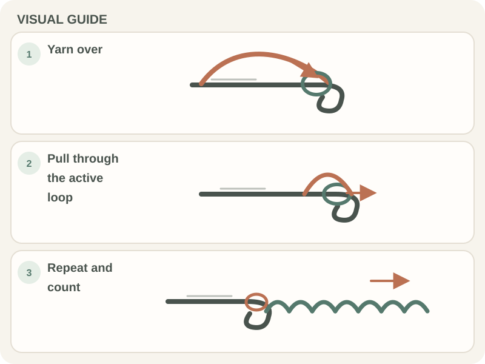

Crochet Basics · Beginner guide
How to Make a Foundation Chain in Crochet
Build a foundation chain by pulling each yarn-over through the loop already on your hook.

Short answer: A foundation chain is a row of chain stitches that many patterns use as the starting edge. Yarn over, pull the strand through the loop on your hook, and repeat until you reach the pattern’s count.
Before you begin
Begin with a slip knot on the hook, smooth yarn, and the pattern’s foundation-chain count. A chain stitch is a loop pulled through the active loop on the hook.
Keep the starting chain loose enough for the hook to enter later. The loop currently on the hook and the slip knot do not count as chain stitches. If the pattern calls for 20 chains, make 20 chain stitches after the slip knot.
Step-by-step instructions
- Step 1: Hold the hook in your dominant hand and the base of the slip knot in your other hand. Let the working yarn pass over the hook from back to front (a yarn over).

A crochet hook and white yarn held between the fingers. Photo by Rahime Gül via Pexels. - Step 2: Rotate the hook head down slightly and draw the yarn through the loop already on the hook. One new chain stitch forms below the hook, and one active loop remains on it.
- Step 3: Move your fingers up to support the newest chain. Yarn over and pull through the active loop again; each repeat makes one chain.
- Step 4: Stop at the number in the pattern. Count the V-shaped links along the chain, leaving out the slip knot and the loop on the hook.

How to check your work
Lay the chain flat and look for a row of distinct V-shaped links. The links should be similar in size, with enough room for the hook to enter them.
Count again before starting the next row. If the pattern specifies where to insert the hook, follow that instruction rather than counting the loop on the hook.
Common beginner problems
- If the chain feels too tight to insert the hook into, loosen your yarn feed or try a larger hook for the foundation chain.
- If chain loops vary greatly, pause after every few stitches and relax the active loop to a consistent size.
- If the chain twists, support it near the hook and turn the work so the V-shaped links face the same way.
Choosing yarn for an even foundation chain
A smooth medium-weight yarn and the suggested hook size make the chain links easy to see. Avoid fuzzy yarn until you can identify each V-shaped link.
If the foundation chain is tighter than the following row, try making the chain with a hook one size larger, then switch back to the pattern hook.
Practice plan
Make a chain of 10 stitches, count the V’s, then undo it and repeat with a looser hand. This small practice piece helps you recognize the chain before working into it.
Next, use the chain to practice the US single crochet stitch.
Quick summary
- Yarn over and pull the strand through the active loop.
- Repeat once for each chain stitch the pattern requests.
- Count the chain links, not the slip knot or active loop.
Frequently asked questions
Do I count the loop on my hook?
No. The active loop is not a completed chain stitch.
Do I count the slip knot?
Usually no. Start counting the chain stitches made after the slip knot.
Why is my foundation chain tighter than the rest of my work?
Many beginners pull chains tight. Relax your yarn hand or use a larger hook for the chain, then switch to the pattern hook if needed.